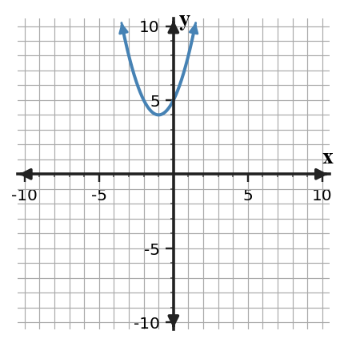
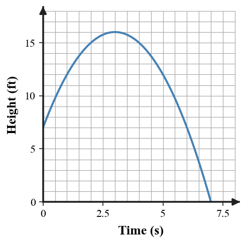

Unit 6 Progress Tracker
Students will solve quadratic equations, analyze solution methods, model quadratic situations, and interpret solutions in equations, graphs, and contexts.
I need more instruction and practice.
I understand most of it but need more practice.
I can do this independently.
I can teach it.
Progress Tracking
Progress Tracking
Evidence
Progress Tracking
Evidence
Progress Tracking
Evidence
Progress Tracking
Evidence
Learning Ladder
| Rung | I Can Statement | DOK | Level |
|---|---|---|---|
| 8 | I can design a quadratic model for a real-world situation and use it to interpret maximums, minimums, intercepts, and restrictions. | DOK 4 | Above |
| 7 | I can construct and revise a solution strategy that connects equation form, solving method, graph features, and contextual meaning. | DOK 4 | Above |
| 6 | I can critique a quadratic solution method for efficiency, accuracy, and fit to the structure of the equation. | DOK 3 | Essential |
| 5 | I can assess whether quadratic solutions are reasonable by connecting algebraic answers to graphs, tables, and contexts. | DOK 3 | Essential |
| 4 | I can apply factoring, completing the square, or the quadratic formula to solve quadratic equations. | DOK 2 | Essential |
| 3 | I can use a graph, equation, or context to interpret zeros, intercepts, vertices, and solution values. | DOK 2 | Essential |
| 2 | I can use vocabulary and notation for zeros, factors, intercepts, vertices, coefficients, and the discriminant. | DOK 1 | Essential |
| 1 | I can apply basic procedures to substitute values into quadratic equations and read key graph features. | DOK 1 | Essential |
Student Goal Setting
Unit 6 Practice by Depth of Knowledge
Format: 3-5 minute warm-up, vocabulary check, representation recognition, or exit ticket
Purpose: DOK 1 reveals whether students can access the language, notation, and basic graph features needed before selecting and using quadratic solution methods.
Assessment Ideas
- Zero Product Property Can Be Assessed After Section 6.1 - Solve factored quadratic equations with the zero product property; write factored equations from given zeros; connect zeros, repeated zeros, and $x$-intercepts.
- Completing-Square Basics Can Be Assessed After Section 6.2 - Use square-completion patterns to find constants and squared binomials; solve equations from squared form; convert quadratics to vertex form.
- Quadratic Formula Basics Can Be Assessed After Section 6.3 - Apply coefficient identification and discriminant calculations; set up and solve with the quadratic formula; classify solution type from discriminant evidence.
- Method and Feature Selection Can Be Assessed After Section 6.5 - Represent equation structures with appropriate method cues; solve square-root and difference-of-squares forms; choose useful features in simple height and area contexts.
DOK 1 performance shows whether students can use the zero product property, complete-square building blocks, coefficient/discriminant notation, and method cues before multi-step solving. It also shows whether students connect basic algebraic features to intercepts, vertices, and simple quadratic contexts.
Solve the factored equation $(x-5)(x+1)=0$.
For $\,3x^2-7x+2=0$, identify $a$, $b$, and $c$ for the quadratic formula.
Compute the discriminant for $x^2-6x+9=0$ and state the number of real solutions.
Use the graph to name the vertex and estimate the $x$-intercepts.

Evaluate $h(2)$ for $h(t)=-t^2+6t+7$.
Which equation is already in a form that directly uses the zero product property?
- $x^2-9=0$
- $(x-4)(x+6)=0$
- $x^2+8x+7=0$
- $(x-3)^2=25$
Complete the vocabulary table.
| Term | Meaning |
|---|---|
| zero | _____ |
| vertex | _____ |
| discriminant | _____ |
What constant completes the square for $x^2+10x+\underline{\hspace{1cm}}$?
Format: Mini-quiz, graph/table task, matching task, partner check, or short written task
Purpose: DOK 2 reveals whether students can carry out solution procedures and connect each procedure to visible features of equations and graphs.
Assessment Ideas
- Factoring Solutions in Context Can Be Assessed After Section 6.1 - Solve factorable quadratic equations and rectangle-area situations; check solutions by substitution; connect graph zeros to possible factored equations.
- Completing the Square Applications Can Be Assessed After Section 6.2 - Convert quadratic expressions to vertex form by completing the square; solve equations from balanced square form; verify zeros with graph evidence.
- Quadratic Formula Applications Can Be Assessed After Section 6.3 - Apply discriminant reasoning and the quadratic formula; predict the number of real solutions; compare graph estimates with exact or decimal solutions.
- Quadratic Modeling Applications Can Be Assessed After Section 6.5 - Model quadratic area, profit, and height situations; interpret vertices, domains, and landing times; choose efficient exact-solving methods from structure.
DOK 2 performance shows whether students can carry out factoring, completing-square, quadratic-formula, and basic modeling procedures while connecting solutions or vertices to graphs and contexts. It helps separate procedural fluency from errors in interpreting domains, zeros, and graph estimates.
Solve $x^2-9x+20=0$ by factoring. Then write the solutions as $x$-intercepts.
Solve $x^2+8x+7=0$ by completing the square. Show the equivalent square form before solving.
Use the quadratic formula to solve $\,2x^2+5x-3=0$. Show your substitution for $a$, $b$, and $c$.
Use the graph to estimate the solutions of the quadratic equation, then solve $x^2-8x+7=0$ algebraically and compare the results.
Complete the table by calculating the discriminant and identifying the solution type.
| Equation | Discriminant | Solution type |
|---|---|---|
| $x^2-4x+4=0$ | _____ | _____ |
| $x^2-4x+7=0$ | _____ | _____ |
| $x^2-5x+6=0$ | _____ | _____ |
A height model is $h(t)=-t^2+6t+7$, where $t$ is time in seconds and $h$ is height in feet. Use the equation to find when the object reaches height 0, and explain which solution values are meaningful.
Use the blank coordinate plane to sketch a quadratic with vertex $(2,-4)$ and zeros $\,0$ and $\,4$. Label the vertex, zeros, and axis of symmetry.

For each equation, choose the most efficient method: factoring, completing the square, or quadratic formula. Give one sentence of reasoning for each choice.
| Equation | Method | Reason |
|---|---|---|
| $(x-3)(x+8)=0$ | _____ | _____ |
| $x^2+6x-2=0$ | _____ | _____ |
| $\,5x^2-4x-1=0$ | _____ | _____ |
Format: Constructed response, model critique, strategy comparison, representation analysis, or discourse prompt
Purpose: DOK 3 reveals whether students can choose methods intentionally, reason about solution meaning, and check whether answers fit the structure and context.
Assessment Ideas
- Factoring Error Analysis Can Be Assessed After Section 6.1 - Analyze factoring errors and graph-equation checks; correct factors, signs, and lost solutions; justify exact solutions with algebraic structure.
- Completing-Square Analysis Can Be Assessed After Section 6.2 - Critique table, graph, and vertex-form claims; revise completing-square work; justify zeros or vertices using algebra and graph evidence.
- Quadratic Formula Reasoning Can Be Assessed After Section 6.4 - Develop method-comparison arguments across factoring and the quadratic formula; decide which contextual solutions are meaningful; compare graph estimates with exact roots.
- Method Selection Reasoning Can Be Assessed After Section 6.5 - Assess solution existence, graph-equation consistency, and model reasonableness; compare zeros, vertices, and efficient methods; defend conclusions with structure and graph evidence.
DOK 3 performance shows whether students can diagnose errors, revise incomplete work, compare methods, and verify algebra with graphs, tables, and contexts. The results reveal whether students can justify why a solution method or answer is reasonable rather than only completing a procedure.
A student solves $x^2-3x-18=0$ and writes $x^2=0$ or $-3x=0$ or $-18=0$. Critique the error, then show a valid solving strategy.
Compare two methods for solving $x^2-8x+12=0$: factoring and completing the square. Which is more efficient here, and what does each method reveal about the graph?
The table is supposed to represent a quadratic with zeros at $x=1$ and $x=5$.
| $x$ | 0 | 1 | 2 | 3 | 4 | 5 |
|---|---|---|---|---|---|---|
| $y$ | -5 | 0 | 3 | 4 | 3 | 0 |
Use symmetry, zeros, and the maximum value to defend or revise a possible equation.
A student says the equation shown by the graph has “no solutions,” so the quadratic is useless in a model. Critique the claim by connecting the graph, the discriminant, and the meaning of real solutions.

A height equation gives solutions $t=-1$ and $t=5$ when solving for ground contact. Explain why both numbers can be algebraically correct but only one may be meaningful in context.
A student completes the square for $x^2+10x+12=0$ by writing $(x+5)^2+12=0$. Analyze the mistake and revise the equation using balanced steps.
Build a method-selection argument for these equations: $x^2-11x+30=0$, $x^2+4x-3=0$, and $\,4x^2+12x+9=0$. Explain how structure, exactness, and efficiency affect your choices.
The graph shows a height model over time. Use the graph and $h(t)=-t^2+6t+7$ to explain whether the estimated ground-contact time and maximum height are reasonable.

Format: Brief performance task, modeling task, critique-and-revise task, design task, or capstone synthesis task
Purpose: DOK 4 reveals whether students can synthesize solving methods, forms, graph features, and contextual interpretations in a short modeling or design situation.
Assessment Ideas
- Quadratic Model Design Can Be Assessed After Section 6.5 - Design quadratic models from height graphs, projectile contexts, and area constraints; solve or interpret maximums, landing times, and domains; defend efficient method choices from structure.
- Create Quadratics with Constraints Can Be Assessed After Section 6.5 - Create quadratic equations that satisfy root, discriminant, maximum, and domain constraints; translate between factored, standard, and vertex forms; justify method choices for each form.
- Synthesize Quadratic Representations Can Be Assessed After Section 6.5 - Validate synthesized area, graph, discriminant, and method representations; revise mismatched quadratic models; defend why solution count and method choice agree across representations.
- Optimization Model Revision Can Be Assessed After Section 6.5 - Model optimization and break-even situations with quadratic functions; revise area and profit models; justify vertex meanings, domains, scale factors, and exact intercepts.
DOK 4 performance shows whether students can design or revise quadratic models from constraints, synthesize multiple representations, and defend solution methods in modeling situations. It also reveals whether students can interpret maximums, domains, intercepts, scale factors, and exact solutions as connected parts of one quadratic model.
Design a quadratic height model for an object that starts 6 feet above the ground, reaches the ground at 4 seconds, and has its maximum height halfway through the flight. Write an equation, identify the domain restriction, and interpret the vertex and intercepts.
Create a solution-method decision guide for quadratics. Include at least four branches: factored form, easy trinomial, perfect-square structure, and general standard form. For each branch, give an equation and justify the method.
A student models a ball thrown from the ground with $h(t)=t^2-6t$. The student says the model shows the ball rises and returns to the ground after 6 seconds. Critique and revise the model so the graph behavior matches the story.
A business model can be solved exactly by the quadratic formula, but a graph gives a quick estimate. Compare the strengths and limits of exact and approximate solutions, then recommend which should be reported for a pricing decision.
Design an optimization situation that can be modeled by a quadratic. Provide a table, equation, or graph description; identify what maximum or minimum means; and explain any restrictions on possible input values.
Construct and revise a full solution strategy for $\,2x^2+9x-5=0$. Your strategy must connect equation form, a chosen method, graph features, and the meaning of both solutions.
Create one quadratic equation with no real solutions and one with exactly one real solution. For each, explain how the discriminant, graph, and algebraic solving work together.
A classmate always uses the quadratic formula for every quadratic. Critique this approach by comparing it with factoring and completing the square for two different equations of your choice, then revise the classmate's strategy.